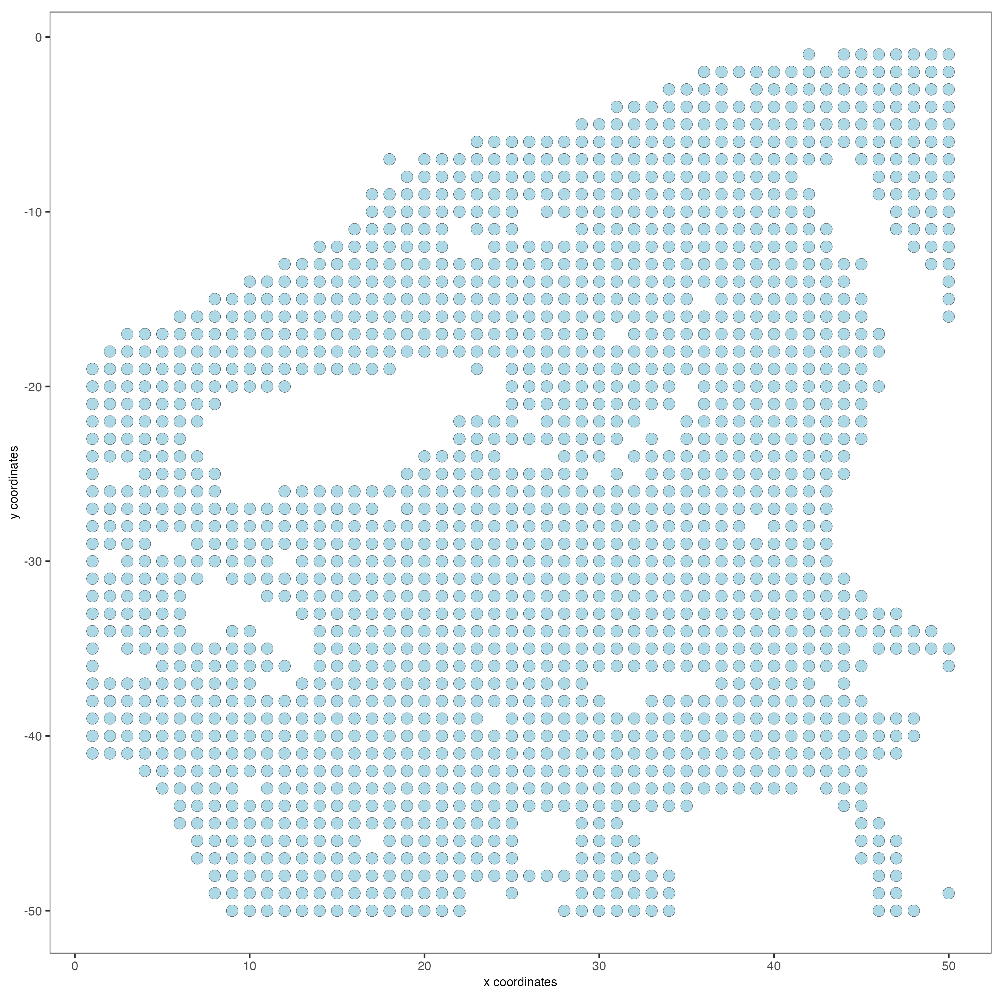
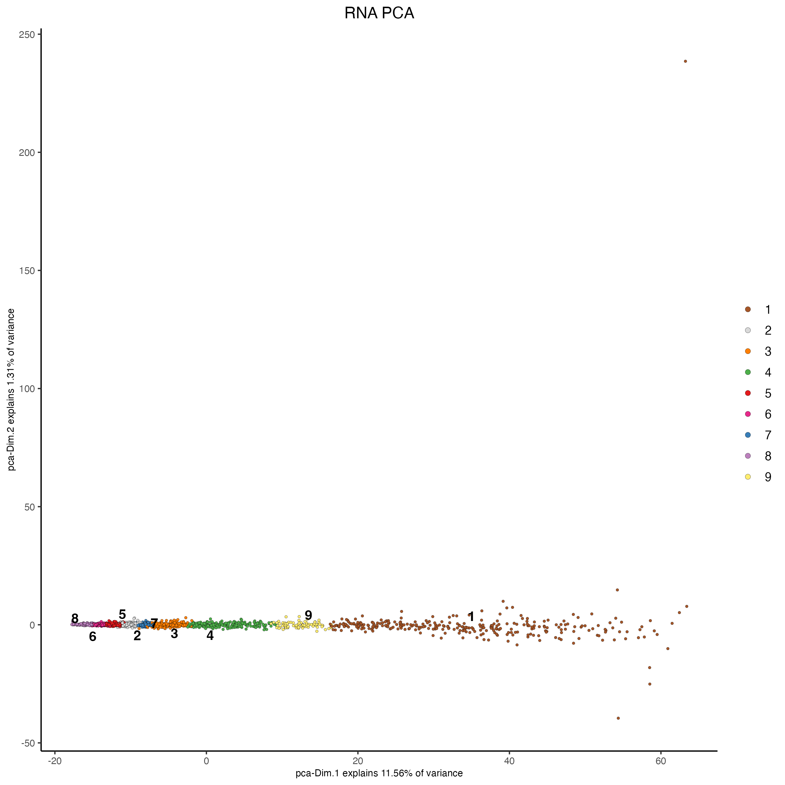
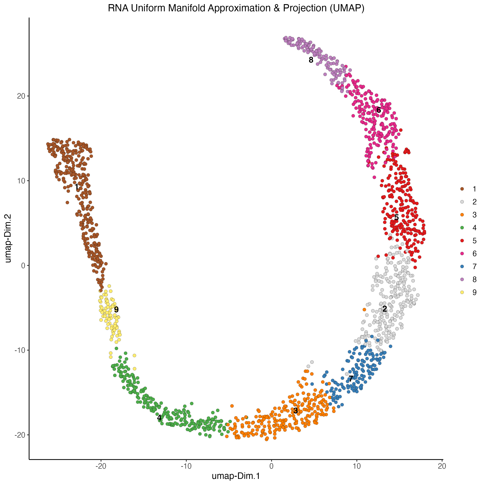
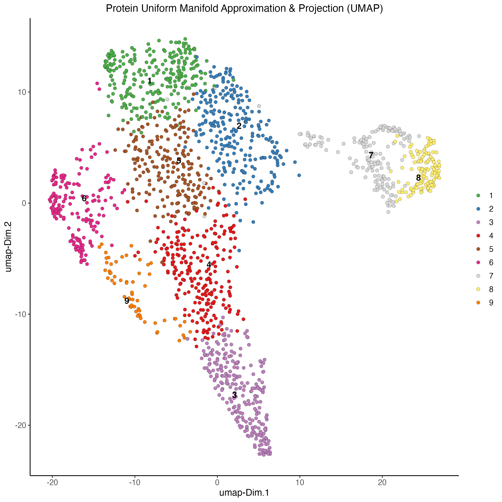
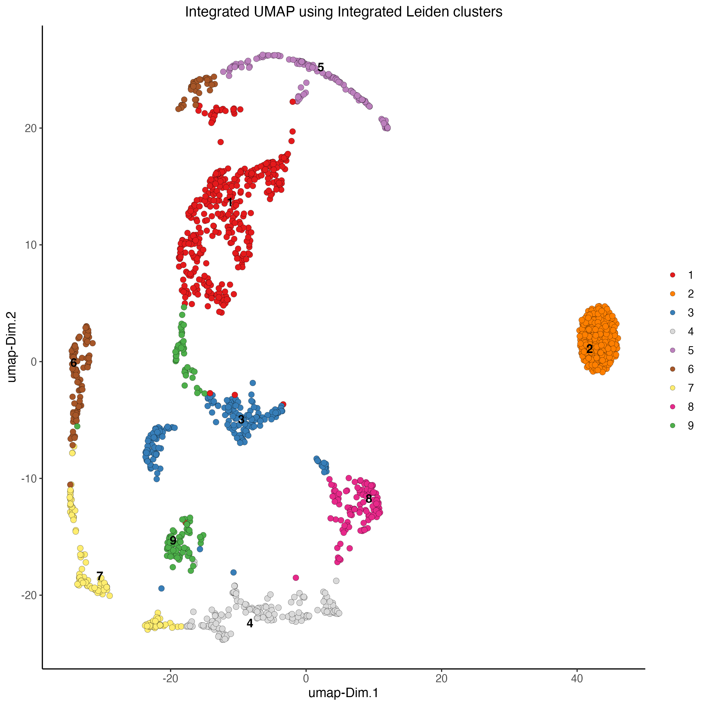
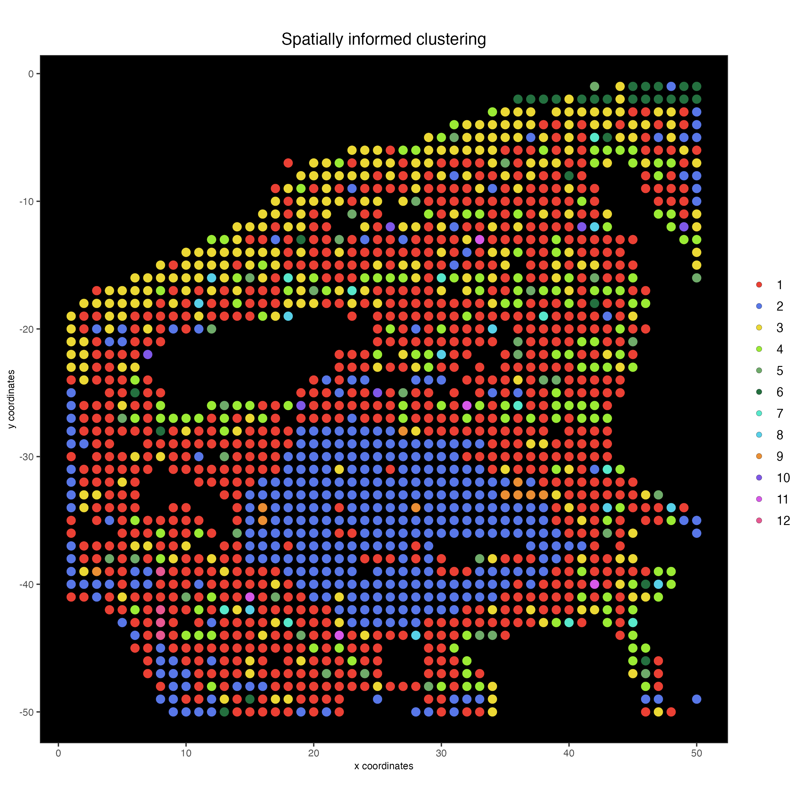

Multi-omics Spatial CITE-Seq Human skin
Source:vignettes/spatial_citeseq_human_skin.Rmd
spatial_citeseq_human_skin.Rmd1 Dataset explanation
To run this example, we will use the Skin dataset from the article High-plex protein and whole transcriptome co-mapping at cellular resolution with spatial CITE-seq
2 Start Giotto
# Ensure Giotto Suite is installed
if(!"Giotto" %in% installed.packages()) {
pak::pkg_install("drieslab/Giotto")
}
# Ensure the Python environment for Giotto has been installed
genv_exists = Giotto::checkGiottoEnvironment()
if(!genv_exists){
# The following command need only be run once to install the Giotto environment
Giotto::installGiottoEnvironment()
}3 Create Giotto object
library(Giotto)
instrs <- createGiottoInstructions(save_plot = TRUE,
save_dir = "results",
show_plot = TRUE)Create spatial coords table
x = data.table::fread("data/GSM6578065_humanskin_RNA.tsv.gz")
spatial_coords = data.frame(cell_ID = x$X)
spatial_coords = cbind(spatial_coords,
stringr::str_split_fixed(spatial_coords$cell_ID,
pattern = "x",
n = 2))
colnames(spatial_coords)[2:3] = c("sdimx", "sdimy")
spatial_coords$sdimx = as.integer(spatial_coords$sdimx)
spatial_coords$sdimy = as.integer(spatial_coords$sdimy)
spatial_coords$sdimy = spatial_coords$sdimy*(-1)Read rna and protein expression matrix
rna_matrix = data.table::fread("data/GSM6578065_humanskin_RNA.tsv.gz")
rna_matrix = rna_matrix[rna_matrix$X %in% spatial_coords$cell_ID,]
rna_matrix = rna_matrix[match(spatial_coords$cell_ID, rna_matrix$X),]
rna_matrix = t(rna_matrix[,-1])
colnames(rna_matrix) = spatial_coords$cell_ID
protein_matrix = data.table::fread("data/GSM6578074_humanskin_protein.tsv.gz")
protein_matrix = protein_matrix[protein_matrix$X %in% spatial_coords$cell_ID,]
protein_matrix = protein_matrix[match(spatial_coords$cell_ID, protein_matrix$X),]
protein_matrix = t(protein_matrix[,-1])
colnames(protein_matrix) = spatial_coords$cell_IDCreate Giotto object using RNA and Protein expression, as well as spatial positions
my_giotto_object <- createGiottoObject(expression = list(rna = list(raw = rna_matrix),
protein = list(raw = protein_matrix)),
expression_feat = list("rna", "protein"),
spatial_locs = spatial_coords,
instructions = instrs)Add tissue image
my_giotto_image <- createGiottoImage(gobject = my_giotto_object,
do_manual_adj = TRUE,
scale_factor = 0.5,
mg_object = "img/skin.jpg",
negative_y = TRUE)
my_giotto_object <- addGiottoImage(gobject = my_giotto_object,
images = list(my_giotto_image),
spat_loc_name = "raw")Visualize image
spatPlot2D(my_giotto_object,
point_size = 3.5)
4 Processing
Filtering
# RNA
my_giotto_object <- filterGiotto(gobject = my_giotto_object,
spat_unit = "cell",
feat_type = "rna",
expression_threshold = 1,
feat_det_in_min_cells = 1,
min_det_feats_per_cell = 1)
# Protein
my_giotto_object <- filterGiotto(gobject = my_giotto_object,
spat_unit = "cell",
feat_type = "protein",
expression_threshold = 1,
feat_det_in_min_cells = 1,
min_det_feats_per_cell = 1)Normalization
# RNA
my_giotto_object <- normalizeGiotto(gobject = my_giotto_object,
spat_unit = "cell",
feat_type = "rna",
norm_methods = "standard",
scalefactor = 10000,
verbose = TRUE)
# Protein
my_giotto_object <- normalizeGiotto(gobject = my_giotto_object,
spat_unit = "cell",
feat_type = "protein",
scalefactor = 6000,
verbose = T)Statistics
# RNA
my_giotto_object <- addStatistics(gobject = my_giotto_object,
spat_unit = "cell",
feat_type = "rna")
# Protein
my_giotto_object <- addStatistics(gobject = my_giotto_object,
spat_unit = "cell",
feat_type = "protein",
expression_values = "normalized")5 Dimention Reduction
Principal component analysis (PCA)
# RNA
my_giotto_object <- runPCA(gobject = my_giotto_object,
spat_unit = "cell",
feat_type = "rna",
expression_values = "normalized",
reduction = "cells",
name = "rna.pca")
# Protein
my_giotto_object <- runPCA(gobject = my_giotto_object,
spat_unit = "cell",
feat_type = "protein",
expression_values = "normalized",
scale_unit = T,
center = F,
method = "factominer")6 Clustering
Uniform manifold approximation projection (UMAP)
# RNA
my_giotto_object <- runUMAP(gobject = my_giotto_object,
spat_unit = "cell",
feat_type = "rna",
expression_values = "normalized",
reduction = "cells",
dimensions_to_use = 1:10,
dim_reduction_name = "rna.pca")
# Protein
my_giotto_object <- runUMAP(gobject = my_giotto_object,
spat_unit = "cell",
feat_type = "protein",
expression_values = "normalized",
dimensions_to_use = 1:10)Create nearest network
# RNA
my_giotto_object <- createNearestNetwork(gobject = my_giotto_object,
spat_unit = "cell",
feat_type = "rna",
type = "sNN",
dim_reduction_to_use = "pca",
dim_reduction_name = "rna.pca",
dimensions_to_use = 1:10,
k = 20)
# Protein
my_giotto_object <- createNearestNetwork(gobject = my_giotto_object,
spat_unit = "cell",
feat_type = "protein",
type = "sNN",
name = "protein_sNN.pca",
dimensions_to_use = 1:10,
k = 20)Find Leiden clusters
# RNA
my_giotto_object <- doLeidenCluster(gobject = my_giotto_object,
spat_unit = "cell",
feat_type = "rna",
nn_network_to_use = "sNN",
name = "leiden_clus",
resolution = 1)
# Protein
my_giotto_object <- doLeidenCluster(gobject = my_giotto_object,
spat_unit = "cell",
feat_type = "protein",
nn_network_to_use = "sNN",
network_name = "protein_sNN.pca",
name = "leiden_clus",
resolution = 1)Plot PCA
# RNA
plotPCA(gobject = my_giotto_object,
spat_unit = "cell",
feat_type = "rna",
dim_reduction_name = "rna.pca",
cell_color = 'leiden_clus',
title = "RNA PCA")
# Protein
plotPCA(gobject = my_giotto_object,
spat_unit = "cell",
feat_type = "protein",
dim_reduction_name = "protein.pca",
cell_color = 'leiden_clus',
title = "Protein PCA")
Plot UMAP
# RNA
plotUMAP(gobject = my_giotto_object,
spat_unit = "cell",
feat_type = "rna",
cell_color = 'leiden_clus',
point_size = 2,
title = "RNA Uniform Manifold Approximation & Projection (UMAP)",
axis_title = 12,
axis_text = 10 )
# Protein
plotUMAP(gobject = my_giotto_object,
spat_unit = "cell",
feat_type = "protein",
cell_color = 'leiden_clus',
dim_reduction_name = "protein.umap",
point_size = 2,
title = "Protein Uniform Manifold Approximation & Projection (UMAP)",
axis_title = 12,
axis_text = 10 )
Plot spatial locations by cluster
# RNA
spatPlot2D(my_giotto_object,
show_image = TRUE,
point_size = 3.5,
cell_color = "leiden_clus",
title = "RNA Leiden clustering")
# Protein
spatPlot2D(my_giotto_object,
spat_unit = "cell",
feat_type = "protein",
cell_color = "leiden_clus",
point_size = 3.5,
show_image = TRUE,
title = "Protein Leiden clustering")
7 Multi-omics integration
Create nearest network
my_giotto_object <- createNearestNetwork(gobject = my_giotto_object,
spat_unit = "cell",
feat_type = "rna",
type = "kNN",
dim_reduction_name = "rna.pca",
name = "rna_kNN.pca",
dimensions_to_use = 1:10,
k = 20)
my_giotto_object <- createNearestNetwork(gobject = my_giotto_object,
spat_unit = "cell",
feat_type = "protein",
type = "kNN",
name = "protein_kNN.pca",
dimensions_to_use = 1:10,
k = 20)Calculate WNN
my_giotto_object <- runWNN(my_giotto_object,
modality_1 = "rna",
modality_2 = "protein",
pca_name_modality_1 = "rna.pca",
pca_name_modality_2 = "protein.pca",
k = 20)Create integrated UMAP
my_giotto_object <- runIntegratedUMAP(my_giotto_object,
modality1 = "rna",
modality2 = "protein")Calculate Leiden clusters
my_giotto_object <- doLeidenCluster(gobject = my_giotto_object,
spat_unit = "cell",
feat_type = "rna",
nn_network_to_use = "kNN",
network_name = "integrated_kNN",
name = "integrated_leiden_clus",
resolution = 0.7)Plot integrated UMAP
plotUMAP(gobject = my_giotto_object,
spat_unit = "cell",
feat_type = "rna",
cell_color = 'integrated_leiden_clus',
dim_reduction_name = "integrated.umap",
point_size = 2.5,
title = "Integrated UMAP using Integrated Leiden clusters",
axis_title = 12,
axis_text = 10)
Plot integrated spatial locations by cluster
spatPlot2D(my_giotto_object,
spat_unit = "cell",
feat_type = "rna",
cell_color = "integrated_leiden_clus",
point_size = 3.5,
show_image = TRUE,
title = "Integrated Leiden clustering")
8 Calculate spatially variable genes
my_giotto_object <- createSpatialNetwork(gobject = my_giotto_object,
method = 'kNN',
k = 6,
maximum_distance_knn = 5,
name = 'spatial_network')
ranktest = binSpect(my_giotto_object,
bin_method = 'rank',
calc_hub = T,
hub_min_int = 5,
spatial_network_name = 'spatial_network')
spatFeatPlot2D(my_giotto_object,
expression_values = 'scaled',
feats = ranktest$feats[1:6],
cow_n_col = 2,
point_size = 1.5)
Spatially correlated genes
# 3.1 cluster the top 500 spatial genes into 20 clusters
ext_spatial_genes = ranktest[1:500,]$feats
# here we use existing detectSpatialCorGenes function to calculate pairwise distances between genes (but set network_smoothing=0 to use default clustering)
spat_cor_netw_DT = detectSpatialCorFeats(my_giotto_object,
method = 'network',
spatial_network_name = 'spatial_network',
subset_feats = ext_spatial_genes)
# 3.3 identify potenial spatial co-expression
spat_cor_netw_DT = clusterSpatialCorFeats(spat_cor_netw_DT,
name = 'spat_netw_clus',
k = 3)
# visualize clusters
heatmSpatialCorFeats(my_giotto_object,
spatCorObject = spat_cor_netw_DT,
use_clus_name = 'spat_netw_clus',
heatmap_legend_param = list(title = NULL),
save_param = list(base_height = 6,
base_width = 8,
units = 'cm'))
9 Metagenes/co-expression modules
# 3.4 create metagenes / co-expression modules
cluster_genes = getBalancedSpatCoexpressionFeats(spat_cor_netw_DT,
maximum = 30)
my_giotto_object = createMetafeats(my_giotto_object,
feat_clusters = cluster_genes,
name = 'cluster_metagene')
spatCellPlot(my_giotto_object,
spat_enr_names = 'cluster_metagene',
cell_annotation_values = as.character(c(1:7)),
point_size = 1,
cow_n_col = 3)
10 Spatially informed clustering
my_spatial_genes = names(cluster_genes)
my_giotto_object <- runPCA(gobject = my_giotto_object,
feats_to_use = my_spatial_genes,
name = 'custom_pca')
my_giotto_object <- runUMAP(my_giotto_object,
dim_reduction_name = 'custom_pca',
dimensions_to_use = 1:20,
name = 'custom_umap')
my_giotto_object <- createNearestNetwork(gobject = my_giotto_object,
dim_reduction_name = 'custom_pca',
dimensions_to_use = 1:20,
k = 3,
name = 'custom_NN')
my_giotto_object <- doLeidenCluster(gobject = my_giotto_object,
network_name = 'custom_NN',
resolution = 0.1,
n_iterations = 1000,
name = 'custom_leiden')
spatPlot2D(my_giotto_object,
show_image = FALSE,
cell_color = 'custom_leiden',
cell_color_code = c("#eb4034",
"#5877e8",
"#ebd834",
"#9beb34",
"#6fab6a",
"#24703f",
"#58e8cb",
"#58d0e8",
"#eb8f34",
"#7f58e8",
"#d758e8",
"#e85892"),
point_size = 3.5,
background_color = "black",
title = "Spatially informed clustering")
11 Session Info
R version 4.3.2 (2023-10-31)
Platform: x86_64-apple-darwin20 (64-bit)
Running under: macOS Sonoma 14.3
Matrix products: default
BLAS: /System/Library/Frameworks/Accelerate.framework/Versions/A/Frameworks/vecLib.framework/Versions/A/libBLAS.dylib
LAPACK: /Library/Frameworks/R.framework/Versions/4.3-x86_64/Resources/lib/libRlapack.dylib; LAPACK version 3.11.0
locale:
[1] en_US.UTF-8/en_US.UTF-8/en_US.UTF-8/C/en_US.UTF-8/en_US.UTF-8
time zone: America/New_York
tzcode source: internal
attached base packages:
[1] stats graphics grDevices utils datasets methods base
other attached packages:
[1] Giotto_4.0.2 GiottoClass_0.1.3
loaded via a namespace (and not attached):
[1] colorRamp2_0.1.0 bitops_1.0-7 rlang_1.1.3
[4] magrittr_2.0.3 clue_0.3-65 GetoptLong_1.0.5
[7] GiottoUtils_0.1.4 matrixStats_1.2.0 compiler_4.3.2
[10] png_0.1-8 systemfonts_1.0.5 vctrs_0.6.5
[13] stringr_1.5.1 shape_1.4.6 pkgconfig_2.0.3
[16] SpatialExperiment_1.12.0 crayon_1.5.2 fastmap_1.1.1
[19] backports_1.4.1 magick_2.8.2 XVector_0.42.0
[22] labeling_0.4.3 utf8_1.2.4 rmarkdown_2.25
[25] ragg_1.2.7 xfun_0.42 zlibbioc_1.48.0
[28] beachmat_2.18.0 GenomeInfoDb_1.38.6 jsonlite_1.8.8
[31] flashClust_1.01-2 DelayedArray_0.28.0 BiocParallel_1.36.0
[34] terra_1.7-71 irlba_2.3.5.1 parallel_4.3.2
[37] cluster_2.1.6 R6_2.5.1 RColorBrewer_1.1-3
[40] stringi_1.8.3 reticulate_1.35.0 GenomicRanges_1.54.1
[43] estimability_1.4.1 iterators_1.0.14 Rcpp_1.0.12
[46] SummarizedExperiment_1.32.0 knitr_1.45 R.utils_2.12.3
[49] FNN_1.1.4 IRanges_2.36.0 igraph_2.0.1.1
[52] Matrix_1.6-5 tidyselect_1.2.0 rstudioapi_0.15.0
[55] abind_1.4-5 yaml_2.3.8 doParallel_1.0.17
[58] codetools_0.2-19 lattice_0.22-5 tibble_3.2.1
[61] Biobase_2.62.0 withr_3.0.0 evaluate_0.23
[64] circlize_0.4.15 pillar_1.9.0 MatrixGenerics_1.14.0
[67] foreach_1.5.2 checkmate_2.3.1 DT_0.31
[70] stats4_4.3.2 dbscan_1.1-12 generics_0.1.3
[73] RCurl_1.98-1.14 S4Vectors_0.40.2 ggplot2_3.4.4
[76] munsell_0.5.0 scales_1.3.0 gtools_3.9.5
[79] xtable_1.8-4 leaps_3.1 glue_1.7.0
[82] emmeans_1.10.0 scatterplot3d_0.3-44 tools_4.3.2
[85] GiottoVisuals_0.1.4 data.table_1.15.0 ScaledMatrix_1.10.0
[88] mvtnorm_1.2-4 Cairo_1.6-2 cowplot_1.1.3
[91] grid_4.3.2 colorspace_2.1-0 SingleCellExperiment_1.24.0
[94] GenomeInfoDbData_1.2.11 BiocSingular_1.18.0 cli_3.6.2
[97] rsvd_1.0.5 textshaping_0.3.7 fansi_1.0.6
[100] S4Arrays_1.2.0 ComplexHeatmap_2.18.0 dplyr_1.1.4
[103] uwot_0.1.16 gtable_0.3.4 R.methodsS3_1.8.2
[106] digest_0.6.34 BiocGenerics_0.48.1 SparseArray_1.2.3
[109] ggrepel_0.9.5 FactoMineR_2.9 rjson_0.2.21
[112] htmlwidgets_1.6.4 farver_2.1.1 htmltools_0.5.7
[115] R.oo_1.26.0 lifecycle_1.0.4 multcompView_0.1-9
[118] GlobalOptions_0.1.2 MASS_7.3-60.0.1